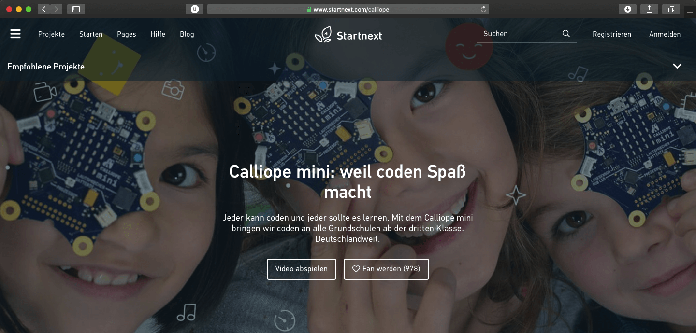

"Calliope Mini" Referat
Auf Open Roberta kannst du den Calliope Mini programmieren oder simulieren. Der Calliope wird mit der Programmiersprache Scratch programmiert. Die Mission ist es, jedem Schulkind in der dritten Klasse einen dieser Einplatincomputer zur Verfüngung zu stellen.
Um die Funktionen auszuprobieren, findest du unten ein paar Beispielaufgaben. Die erste Aufgabe ist für Kinder im Grundschulalter gedacht. Die zweite Aufgabe ist komplexer und soll die Möglichkeiten der Programmiersprache darstellen.
Mit Open Roberta will Google Deutschland (und google.org) die Möglichkeiten für Schülerinnen und Schüler verbesser programmieren zu lernen. Es werden Schulungen und Material für Lehrkräfte angeboten.
Öffne Open Roberta und klicke auf Calliope Mini. Open Roberta
Die Plattform dient als Online-Editor. Auf der linken Seite sind alle Elemente, die mit "Start" verbunden werden können.
Los gehts!Aufgabe 1
Die erste Aufgabe demonstriet eine klassische Funktion des Programmierens. Das Ziel ist es, dass der Calliope ein Bild anzeigt (z.B. ) und sobald ein Knopf gedrückt wird ein Text durch das LED Feld läuft.
Aufgabe 2
Die zweite Aufgabe lässt die Komplexität der Programmiersprache und des Calliope Minis erahnen. Baue eine Stoppuhr mit dem Calliope Mini.
Unten habe ich die Startnext Seite des Calliope Projekts verlinkt. In dem Video schildern die Entwickler*innen ihre Ideen.
Lösung im Editor
Calliope auf Startnext
Programmieren für Kinder
- iPad Apps
- Material
- https://www.codingkids.de (Magazin für Pädagog*innen und Eltern)
- https://appcamps.de/ (Kostenloses Unterrichtsmaterial zu digitalen Themen)
- Chaos Computer Club, Chaos macht Schule (Programm des Chaos Computer Clubs für Schüler*innen)
- https://studio.code.org (Online Kurse für Schüler*innen)
- Calliope-Adventskalender der GSDM TU Dreden
- Programmiersprachen
- Hardware
- Lego Education: WeDo / Mindstorms
- Arduino (Hardwareprojekte, ähnlich Calliope Mini)
- RaspberryPi
Literatur
- Abend, M., Schwarzer, P., Gramowski, K., Pelz, L., & Poloczek, B. (2017). Coden mit dem Calliope mini: Lehrermaterial für den Einsatz ab Klasse 3. Berlin: Cornelsen.
- Abend, M., Schwarzer, P., Gramowski, K., Pelz, L., & Poloczek, B. (2017b). Coden mit dem Calliope mini: Schülermaterial ab Klasse 3. Berlin: Cornelsen.
- Dziubany, M. (2017). Programmieren in der Grundschule? Aber ja: Kinder lernen Informatik mit LEGO WeDo. Grundschulunterricht Mathematik, (4/2017).
- Gesellschaft für Informatik e.V. (2019). Kompetenzen für informatische Bildung im Primarbereich. Abgerufen 26. Mai 2019, von https://www.informatikstandards.de/docs/v142_empfehlungen_kompetenzen-primarbereich_2019-01-31.pdf
- KMK (2016). Bildung in der digitalen Welt: Strategie der Kultusministerkonferenz. Abgerufen 24. Mai 2019, von https://www. kmk. org/fileadmin/Dateien/pdf/PresseUndAktuelles/2016/Bildung_digitale_Welt_Webversion. pdf
- Knodel, P. (2018). Wie funktioniert die digitale Welt: Mit Kindern die ersten Programmierschritte machen. Grundschulunterricht Deutsch, (4/2018).
- Schmid, F. (2018). Programmieren im Deutschunterricht: Ein einfacher Einstieg für alle Nicht-Techies. Grundschulunterricht Deutsch, (4/2018).